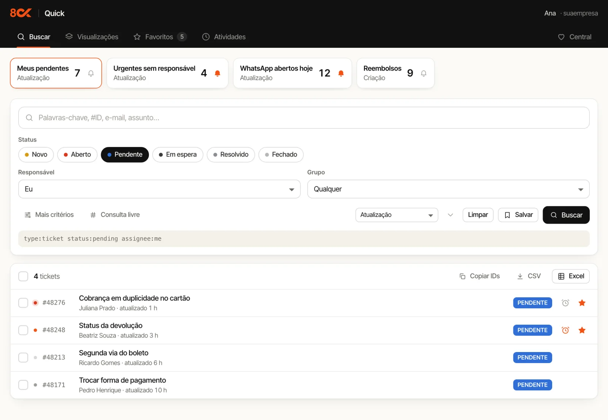
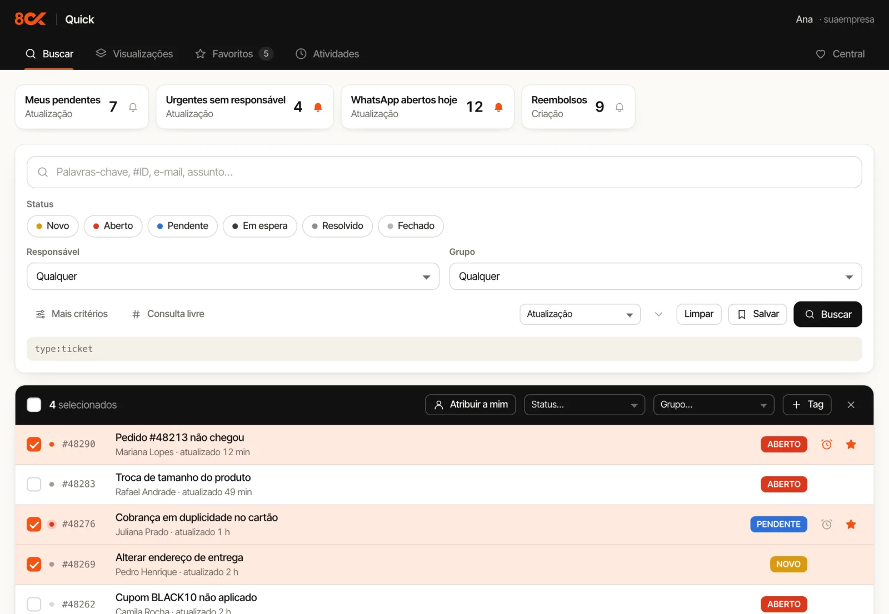
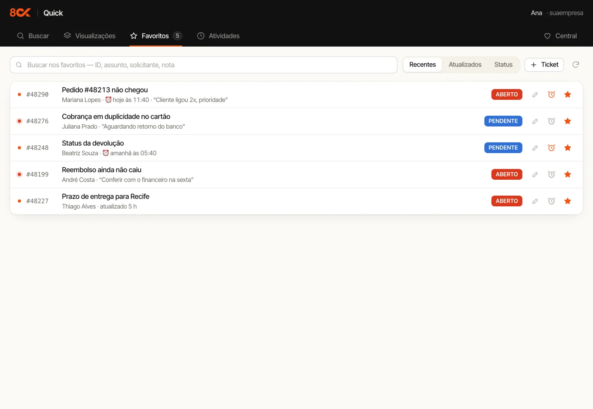
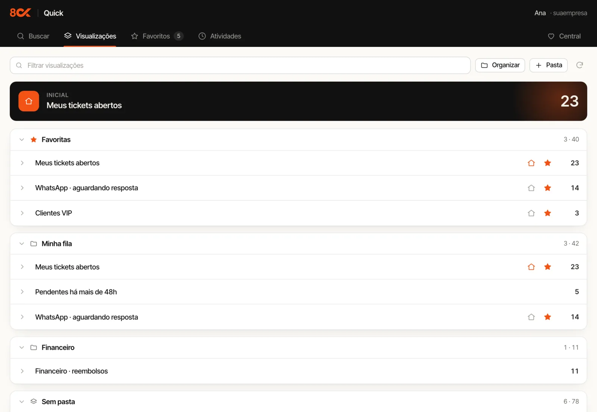
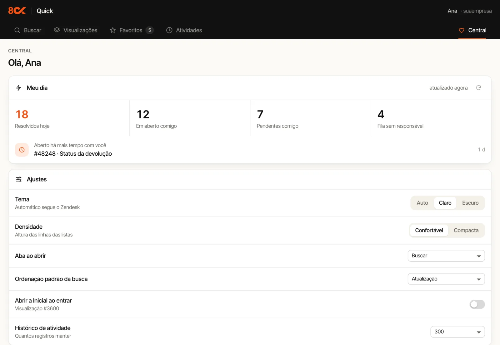
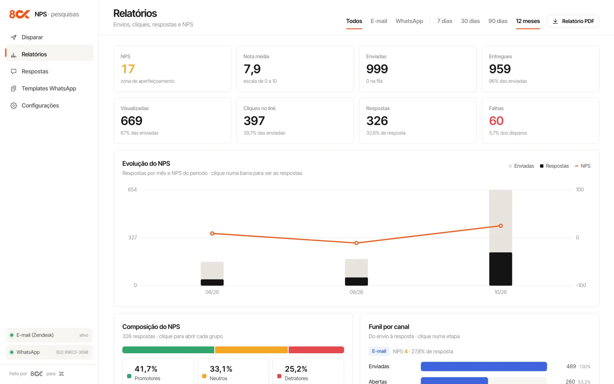

8CX Quick
Busca avançada, buscas salvas com alerta, ações em massa, favoritos com lembrete e o resumo do dia, num painel na barra superior do Zendesk. Menos cliques repetidos para cada agente, desde o primeiro dia.

Por agente por dia economizados, numa conta conservadora
Para atribuir, mudar status, grupo ou tag em vários tickets
Agentes, sem cobrança por usuário
Pagamento único, sem variação do dólar
O painel de produtividade do agente, dentro do Zendesk.
Ache qualquer ticket em segundos.
Combine status, responsável, grupo, prioridade, canal, tags e datas sem decorar a sintaxe do Zendesk. Salve as buscas do dia a dia e veja a contagem atualizada no topo.
- Buscas salvas com contagem ao vivo
- Alerta no Zendesk quando entra ticket numa fila crítica
- Ordenação por atualização, criação, prioridade e status
- Exportar qualquer busca para Excel (.xlsx) ou CSV
Dez tickets resolvidos numa ação só.
Selecione os tickets na busca e atribua a você, mude o status, mova de grupo ou adicione uma tag de uma vez, sem abrir um por um.
- Atribuir a mim em lote
- Mudar status e grupo de vários tickets
- Adicionar tag nos selecionados
- Copiar os IDs para colar onde precisar

Nenhum retorno fica esquecido.
Marque os tickets importantes, escreva uma nota e peça um lembrete: “me lembre em 2h”. Na hora certa, o aviso aparece no Zendesk.
- Lembretes: em 1h, 2h, 4h, amanhã às 9h ou data livre
- Nota em cada favorito
- Busca por ID, assunto, solicitante ou nota
- Status sempre atualizado

A fila certa a um clique.
Agrupe as visualizações em pastas, marque as favoritas e defina uma Inicial que abre ao entrar no Zendesk, com a contagem de cada uma.
- Pastas ilimitadas
- Visualização Inicial que abre sozinha
- Prévia dos tickets sem sair da lista
- Contagem atualizada de cada fila

O agente sabe onde está, a qualquer hora.
Resolvidos hoje, tickets em aberto e pendentes com ele e a fila sem responsável, ao vivo, além do ticket aberto há mais tempo.
- Resolvidos hoje e em aberto comigo
- Fila sem responsável para puxar
- Ticket mais antigo em destaque
- Ajustes de tema, densidade e aba inicial

Atividades
Histórico dos tickets, usuários e organizações abertos, com busca.
Barras laterais
No ticket, no usuário e na organização, com atalhos para a busca.
Tickets parecidos
Do ticket aberto para os semelhantes em um clique.
Central
Ajustes, avisos da equipe e novidades do app num só lugar.
Modo escuro
Segue o tema do Zendesk ou o que o agente escolher.
No ar em um dia
A 8CX instala, configura e apresenta para os agentes.
A 8CX instala, configura e acompanha.
Conversa
Entendemos a sua operação e mostramos o 8CX Quick funcionando com dados de exemplo.
Implantação
Instalamos o app no seu Zendesk e configuramos as regras com o seu time.
Hypercare
Duas semanas de acompanhamento depois do go-live para ajustar o que for preciso.
Vamos conversar sobre o 8CX Quick?
Clique e fale com a 8CX no WhatsApp. A mensagem já vai escrita:
“Olá! Vim do site da 8CX e queria saber mais sobre o 8CX Quick.”conversa ↗

NPS 8CX ↗
Pesquisa de NPS automática por e-mail ou WhatsApp, com a nota de volta no ticket.

8CX Talk ↗
Telefonia em nuvem com URA inteligente, gravação e transcrição por IA.

8CX Produtividade ↗
Produtividade, CSAT, SLA e disponibilidade de cada agente em tempo real.

8CX CRM ↗
Disparos de WhatsApp e e-mail pelo Zendesk, com agendamento e criação de templates.